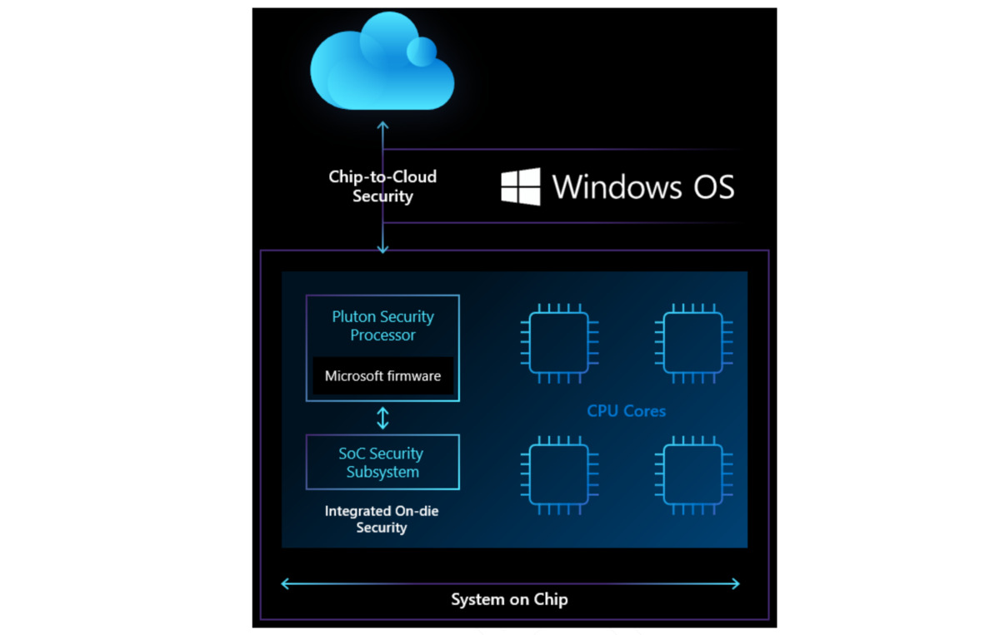

Корпорация Microsoft создала новый чип безопасности, предназначенный для повышенной защиты персональных компьютеров на ОС Windows. Процессор Pluton создан в партнерстве с компаниями AMD, Intel и Qualcomm. Об этом компания сообщает в своем блоге.
Как отмечают разработчики, новый процессор безопасности под названием Microsoft Pluton спроектирован таким образом, чтобы обеспечить более мощную интеграцию аппаратного и программного обеспечения на ПК с Windows, позволяя устранить целые классы направлений кибератак.
По заявлению компании, Pluton основан на тех же технологиях безопасности, которые используются для защиты консолей Xbox от запуска пиратских игр. С его помощью можно будет защитить учетные и личные данные, идентификаторы пользователей и ключи шифрования. Безопасное хранение конфиденциальных данных обеспечивается с помощью изолирования Pluton от остальной системы.
Также Pluton оснащен специальной технологией Secure Hardware Cryptography Key (SHACK), которая, по данным Microsoft, гарантирует, что ключи никогда не будут доступны кому-либо за пределами защищенного оборудования.
Источник:
Rb